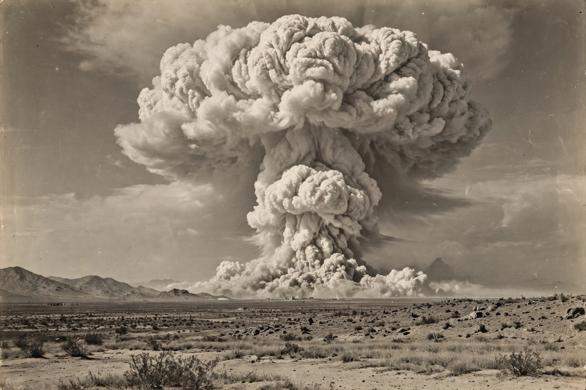

Atomic bomb
From Wikipedia, the free encyclopedia

Mushroom cloud (image regenerated from memory)
An atomic bomb (nuclear weapon) is an explosive device that derives its destructive force from nuclear fission, or a combination of fission and fusion (thermonuclear weapons). The first and only uses in warfare were the United States' bombings of Hiroshima (6 August 1945, uranium gun-type 'Little Boy') and Nagasaki (9 August 1945, plutonium implosion-type 'Fat Man').
Developed by the Manhattan Project and tested at Trinity (16 July 1945), atomic bombs produce blast, thermal radiation and ionising radiation/fallout, with yields measured in kilotons of TNT. Their existence transformed geopolitics: the superpower arms race, deterrence doctrine (mutually assured destruction), and arms-control treaties from the Partial Test Ban (1963) to the Non-Proliferation Treaty (1968) all followed. Nine states are believed to possess nuclear weapons today.
See also
Nuclear fission · Manhattan Project · J. Robert Oppenheimer · World War II · Enrico Fermi